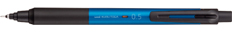
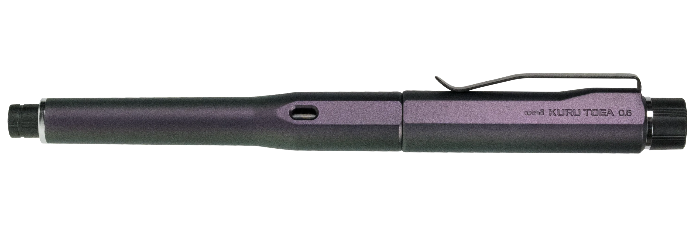

| Model Name | Available Lead Sizes | Length | Diameter | Weight | Available Colors/Styles | Links to buy | Additional Info |
 Standard |
|
14.2cm | 10.2mm | 0.35oz |
|
"The Uni Kuru Toga Standard & US are the most basic mechanical pencils in the lineup. It has a clear grip section where you can see the mechanism at work while you write. The grip has shallow grooves that make it easier to hold." $7.00 |
|
 Advance |
|
13.9cm | 10.3mm | 0.44oz |
|
"The Uni Kuru Toga Advance uses the updated W Speed Engine that rotates the lead twice as fast as that of standard Kuru Toga Mechanical Pencils. It also has a sliding lead sleeve. The Advance looks similar to the Pipe Slide, but it has a metal-plated tip nose cone and clip. The heavier components help give the pencil a lower center of gravity, which can make it feel more balanced than the lighter Pipe Slide." $8.5 - $15.50 |
|
|  KS |
|
14.5cm | 11.1mm | 0.4oz |
|
"Thanks to its minimalist design, the Uni Kuru Toga KS won’t distract you in the middle of a note-taking session. The rubber grip section is comfortable to hold, and the updated rotation mechanism prevents the pencil’s lead pipe from wiggling." $7.00 - $9.50 |
|
 Elite |
|
14.6cm | 9.7mm | 0.54oz |
|
"The Uni Kuru Toga Elite & Roulette have knurled metal grips that make sure you get a good grasp on them. The metallic finishes on their plastic barrels give them a luxurious and high-tech feel." $13.50 |
|
|  Dive |
|
14.8cm | 11.0mm | 0.68oz |
|
"The KURU TOGA DIVE mechanical pencil was designed with the theme of immersed in writing", and its name "DIVE" reflects the immersive experience it provides. This remarkable writing instrument has been newly developed using our proprietary patented technology, making it the world's first pencil with an automatic extension amount adjustment function." $83.00 |